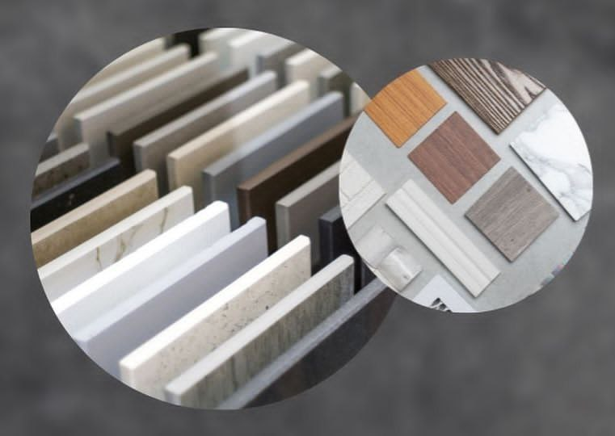
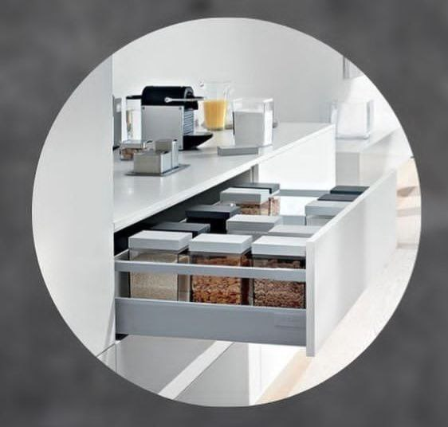
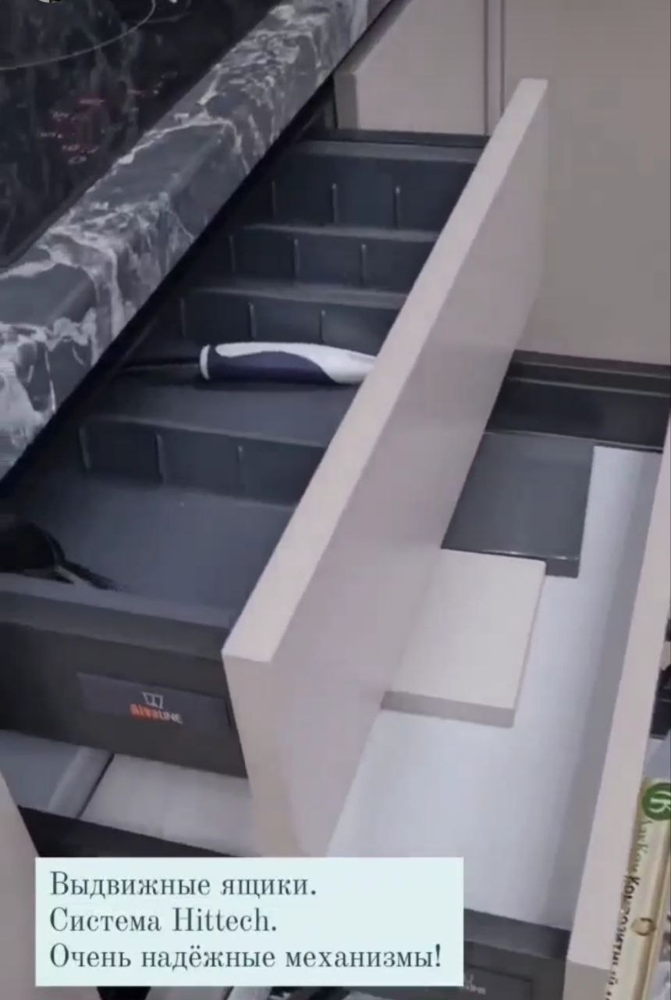
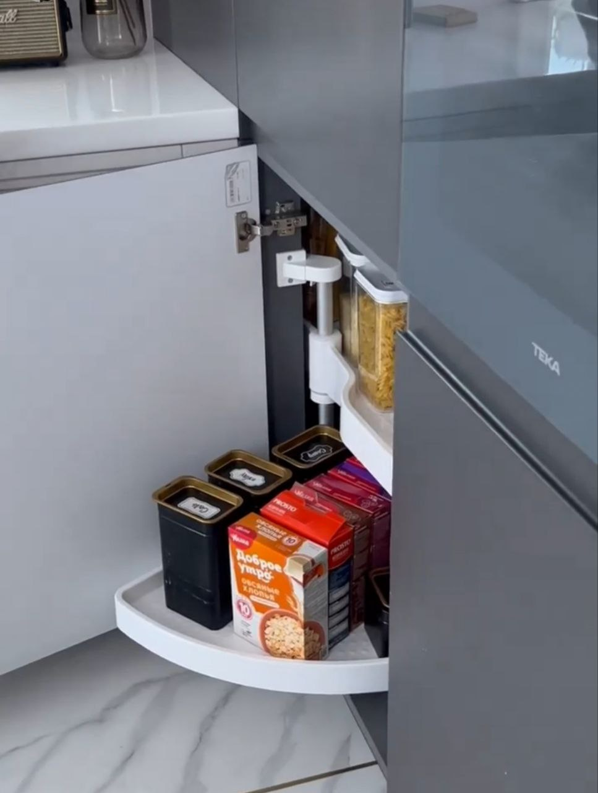

Из чего складывается стоимость кухонь
Добрый день, друзья! Сегодня мы поговорим о важном: о стоимости кухонь, почему мы не пишем стоимость проектов. Из чего складывается итоговая стоимость кухни,от чего она зависит. В каком ценовом сегменте работает наша компания.
Итак, почему мы не пишем стоимость готовых проектов: С большой вероятностью такая информация не будет для вас актуальной! К сожалению, в современном мире цены меняются слишком быстро и зависят от многих факторов. Скорее всего, в тот момент, когда вы захотите узнать стоимость понравившегося проекта, она уже поменялась: в большую или в меньшую сторону. Возможно, это произошло уже, пока мы писали эту информацию.
Например, ее габариты, функциональное наполнение. Чем больше используется различных механизмов, ящиков и шкафов, тем выше будет цена. К примеру, выдвижные ящики будут всегда дороже распашных шкафов, но удобнее. Выбор материалов тоже играет немаловажную роль. В нашей компание огромное количество различных образцов материалов для фасадов, столешниц и т.п. С удовольствием все покажем и подскажем, где и на чем можно сэкономить без ущерба эстетике и функциональности. Для своих проектов мы используем всё самое лучшее: Современные высокотехнологичные станки для производства, европейскую фурнитуру мировых брендов, итальянские краски, импортные пластики и многое другое!
Именно поэтому кухни от МебКемТорга относятся к сегменту средний и выше. В среднем, стоимость наших кухонь начинается от 180 тыс. руб. В любом случае, мы всегда поможем определиться с выбором, предложим разные варианты компоновки и постараемся вписаться в ваш запланированный бюджет
   Как продлить срок службы мебели?
Первое: воздействие света
Естественное выгорание считается нормальным, но тем не менее, не особо приятно наблюдать, как фасады шкафа блекнут или желтеют. При этом выгорание
чаще всего неравномерное: какие-то элементы меняют оттенок сильнее, какие-то меньше. И если заменить один элемент, то он снова будет выбиваться из общей
гаммы. Но если поставить мебель так, чтобы на нее не попадали прямые солнечные лучи, можно существенно замедлить процесс выгорания.
Второе: воздействие температур
Стоит соблюдать элементарные правила: не ставить мебель вблизи источников тепла: плит, каминов, конвекторов. Оптимальное расстояние: от метра. И,
конечно, строго не рекомендуется ставить на столешницы или полки горячие предметы. Даже чашка с кофе может оставить неизгладимый след на
любимом стеллаже, не говоря уже об утюге. Поэтому лучше купить красивые подставки под горячее и гладильную доску и обезопасить мебель.
Третье: воздействие влажности
Слишком влажный воздух может способствовать появлению грибка и разбуханию мебельного щита, а слишком сухой — к рассыханию мебели. Поэтому
следует следить за тем, чтобы влажность в помещении была нормальной (для этого не нужны замеры по ГОСТу, достаточно ощущений), и при необходимости
использовать осушители или увлажнители воздуха.
Уход за корпусной мебелью: еще несколько нюансов
Для очистки корпусной мебели стоит выбирать мягкие ткани, такие как сукно, фланель, микрофибра, сухие или лишь слегка влажные. Столешницы или рабочие
поверхности можно протирать влажной тканью или губкой со специальным, соответствующим типу мебели, чистящим средством. Но потом тоже следуeт протирать мебель насухо
Мебели «противопоказано» воздействие на поверхности кислот, спиртов, щелочи, различных растворителей, даже быстро испаряющихся: они могут
непоправимо испортить как внешний вид, так и материалы. Абразивные материалы — грубые губки, скребки, порошки для очистки — тоже отнюдь не
лучшее решение, ведь они оставят заметные царапины на поверхности. Пар тоже может повредить поверхность, особенно лакированную или ламинированную.